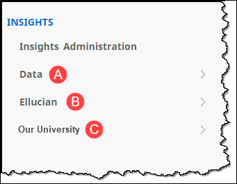
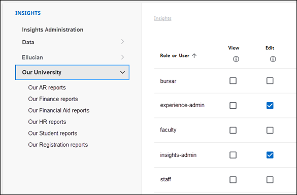
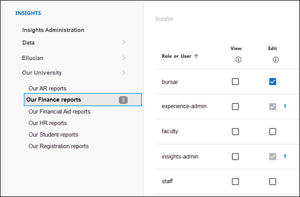
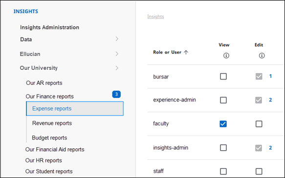
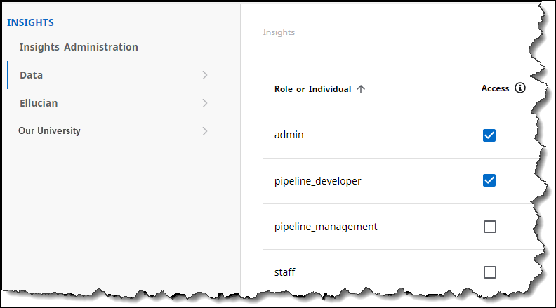
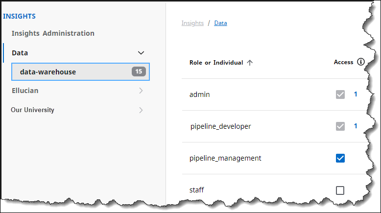
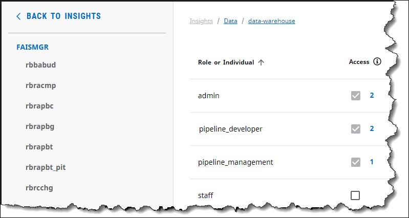
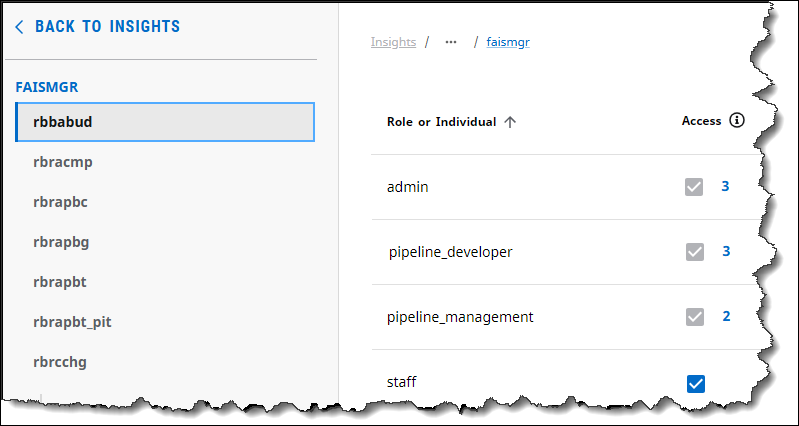

Configure Ellucian Insights
Ellucian Insights setup checklist
To configure Insights, follow this checklist to properly set up your administrators so they can manage the Insights environment and users.
Depending on your licensing type, you also need to either configure end-user access to the Insights reporting tool or connect your own reporting tool to the Insights Data Warehouse.
Experience administrator steps
| Step | Reference |
|---|---|
| 1. Set up the role responsible for configuring Insights Administration. | a. Set up the Insights Administration role b. Grant administrative permissions for Insights |
| 2. Enable the Insights Administration card. | Set up the Insights Administration card in Experience |
| 3. Insights Premium only: Set up the users and roles for using the Insights reporting tool. | Insights reporting tool permissions |
| 4. Insights Premium only: Enable the Insights card. | Set up the Insights card in Experience |
| 5. Insights Premium only: Enable authentication credentials to read Persons API. | Establish authentication credentials for Insights reporting tool users |
| 6. Insights Custom Transformations only: Set up access to the Integration Designer and Integration Packages and enable the cards. | Configure access to Insights Custom Transformations |
Insights administrator steps
| Step | Reference |
|---|---|
| 7. Prepare your data for ingestion. Note: Not applicable to SaaS or Managed Cloud systems.
|
Refer to the applicable topic for your system:
|
| 8. Load your data into the Data Lake. | Ingest your source data into the Data Lake |
| 9. (Recommended) Review parameter records. | Review and update parameters before initial Data Warehouse population |
| 10. Populate your Insights Data Warehouse. | Population overview |
| 11. (Banner and Degree Works only) Update your display rules. Banner systems: This step is optional, as the initial setup is based on your Banner configuration (GTVSDAX). Note: The default display rule values are imported into Insights Administration and the Insights target warehouse during the
load_all transformation process. Subsequent updates to display rules should be made through Insights Administration. |
Display rules overview |
| 12. Optional: Connect your existing reporting tool. | Connect your reporting tool to the Insights Data Warehouse |
Experience administrator setup tasks
To get started with Ellucian Insights, your Experience administrator must define certain roles and permissions, in addition to setting up the Insights-specific cards in Experience.
Follow the instructions in this section to ensure proper setup for Insights in Ellucian Experience.
For a complete list of ordered tasks to complete, refer to Ellucian Insights setup checklist.
Set up the Insights Administration role
To enable an Insights administrator to manage Insights Administration, a role must be set up that grants user access to the Experience dashboard and to the Insights Administration card.
About this task
Procedure
What to do next
Grant administrative permissions for Ellucian Insights
Grant administrative permissions for Insights
Grant the permissions that allow users to manage Ellucian Insights.
Before you begin
Before granting permissions, you need to set up the roles that you want to grant permissions to. See Set up the Insights Administration role.
About this task
Ellucian Insights leverages Experience permissions to support targeted user access.
Procedure
What to do next
Set up the Insights Administration card in Experience
Set up the Insights Administration card in Experience
Insights administrators configure the Insights environment through the Insights Administration card in Ellucian Experience.
Before you begin
Before granting access to the Insights Administration card, you need to set up the roles that you want to grant access to. See Set up the Insights Administration role for more information.
Procedure
Insights reporting tool permissions
Administrators must set both data-level permissions and collections permissions for each role or user of the Insights reporting tool.
Assigning proper permissions for your report viewers and designers is necessary to ensure that they can only view or create the reporting content they are allowed to access.
For best results, Ellucian recommends reviewing all settings and guidelines in this topic and related permissions topics before assigning the permissions.
If you are using a reporting tool other than Ellucian Insights, refer to your reporting tool's documentation for permissions information.
Insights permissions navigation
When assigning permissions, you will assign up to three types of permissions.

You will assign permissions to:
- Data (A), including all data sources (databases), schemas, and tables in each data source.
- Ellucian collections (B), which are dashboards and reports provided by Ellucian.
- Your organization's collections (C), which are any collections created and updated by your users.
Precautions when assigning Insights permissions
The Insights reporting tool determines what information a user can access based on a superset of permissions assigned to that user (or the roles to which the user belongs).
This permissions superset is determined by the permissions assigned for Data and collections, including Ellucian collections and your institution's collections.
- One role can have different levels of access to different collections or folders.
- Users can belong to multiple roles.
- Users can also have permissions assigned to them as individuals, but those permissions do not belong to a role.
Collections (depicted as folders) contain your organization's dashboards and reports. Ellucian also provides collections containing some standard reports and dashboards for select domains.
For additional background on how roles and users are used and defined in Ellucian Experience, refer to Set up roles for Ellucian Experience.
What to do next
If you currently are using non-inherited permissions and are ready to enable inherited permissions, follow the instructions in Enable inherited permissions for systems with Insights.
If you want to wait to enable inherited permissions, keep in mind that you are unable to see or modify currently assigned permissions. You must upgrade to inherited permissions to review or modify any permissions for your users.
Enable inherited permissions for systems with Insights
When the upgrade to inherited permissions is available for your environment (Test or Production), you can begin using inherited permissions for all Experience applications. You must perform this procedure to enable permissions inheritance. You will only perform this procedure one time.
Before you begin
These instructions apply only to institutions who have previously configured permissions for all applications that use Ellucian Experience, including Insights.
- About permissions inheritance in Insights
- About Data permissions
- About collection permissions
About this task
You will only perform this procedure one time.
To enable inherited permissions for Insights and all Experience applications, follow the procedure below.
Procedure
-
Review the Enable Inheritance page carefully.
The Enable Inheritance page previews the permission settings for all Experience applications that will change when upgrading to permission inheritance. It is important to review these changes before moving forward with the upgrade.
For an explanation of the messages that apply to Insights, refer to Required changes when enabling inherited permissions.
The system identifies these required changes because the upgrade process may need to remove some permissions so that no users or roles are granted access to a resource that they could not access previously. Review this list of required changes thoroughly so you can identify any permissions settings you may need to revisit after the upgrade completes.
For example, the Enable Inheritance page identifies that Resource A will have its permissions for a specific application revoked because no children resources had the same permissions. Before this upgrade you could select check boxes at the parent level but that did not enable permissions for any of its children. After the upgrade, the default change would be to enable access for that parent, and all of its children would inherit the permission. However, the upgrade process ensures there are no unintended changes in users' permissions. Therefore for this example, the upgrade process clears the parent check box to prevent the children resources from inheriting access.
For a brief description of a required change, hover over the
 . For a more detailed explanation, see Required changes when enabling inherited permissions. Tip: You may want to take a screen shot or copy and paste this information to a local file so you can review the required changes offline. Large systems may have many changes to review, so you should take the time to review all required changes.
. For a more detailed explanation, see Required changes when enabling inherited permissions. Tip: You may want to take a screen shot or copy and paste this information to a local file so you can review the required changes offline. Large systems may have many changes to review, so you should take the time to review all required changes.
What to do next
Ellucian recommends reviewing the permissions settings for all of your applications to confirm permissions were granted or revoked as expected.
Depending on your needs, you may need to grant permissions to some users or roles, based on what was identified on the Enable Inheritance page.
Refer to Grant Insights reporting tool permissions for instructions on granting or revoking Insights permissions.
Required changes when enabling inherited permissions
When starting the upgrade for permissions inheritance, the Enable Inheritance page identifies the required changes and a brief description of why. Refer to the descriptions below for additional information about why permissions might be added, changed, or removed.
Refer to the following table for explanations of the required changes you may see on the Enable Inheritance page.
| Message | Description |
|---|---|
| All policy actions will be deleted. No children have view. | Applies to collections permissions. No children of this resource have View permission assigned. Therefore, the parent's permission will be removed. |
| All policy actions will be deleted. No children have view. Only some children have edit. | Applies to collections permissions. Currently, the parent resource has View permission and none of its children have View permission assigned. Therefore, View permission will be removed from the parent so that all children do not inherit the permission. Additionally, only some children of this parent resource are granted Edit permission. Therefore, the Edit permission will be removed from the parent resource so that all children do not inherit the permission. The children that currently have Edit permission will retain that permission. |
| All policy actions will be deleted. Only some children have view. | Applies to collections permissions. When permissions inheritance is enabled, the actions specified in the Action(s) column will be deleted to prevent new child permissions from being granted View permission. |
| All policy actions will be deleted. Will inherit view from parent collection. | Applies to collections permissions. The child resource will retain View permission. View permission for this child resource will change from an assigned permission to an inherited permission. |
| Creating policy for missing schema-level policy for full schema access. | The role currently has access to this schema. However the corresponding permissions policy is missing. The missing permissions policy will be created. |
| Creating policy for missing table-level policy. | This role currently has access to this table. However the corresponding permissions policy is missing. The missing permissions policy will be created. |
| Role has full DB access in IRT, keeping only <resource path>. | The role previously had access to all schemas. Now the role will be granted permission at the Data or data-warehouse level, and all schemas will inherit the permissions. |
| Role has full schema access in IRT, removing table-level policies. | The role will not need permission for any level more granular than the schema level. Table-level permissions for this role will display as inherited. |
| Role has no access to this schema in IRT, removing policy. | The role has not been granted permission to this schema in the Insights reporting tool. The schema permissions for this role will be removed. |
| Role has no permissions in IRT, removing all policies. | The role does not have any current permissions for the Insights reporting tool and therefore the permissions will be cleared. |
| Role has only schema-level access in IRT, removing DB-level policy. | The role specified in the Role or User column currently only has schema-level access in the Insights reporting tool. As a result, the database level policy will be removed to avoid new permissions being granted when permissions inheritance is enabled. |
| Role has only table-level access in IRT, removing schema-level policy. | The role has been granted permissions at the table level and therefore should not inherit permission from the schema level. The schema-level permission will be removed. |
| Role not found in IRT permissions. | The role was not properly created for use in the Insights reporting tool and as a result, the Action(s) granted for this resource will be removed from the resource specified in the Resource(s) column. |
| Table not in IRT permissions. | The table no longer exists in the Insights reporting tool. Any permission assigned to this table will be removed. |
About permissions inheritance in Insights
When setting role and user permissions for your Insights Data and collections access, you can grant or revoke permissions at a parent level in the hierarchy and the change applies to all children of those parent resources.
Guidelines for setting permissions based on hierarchy
Follow these general guidelines when granting or revoking permissions for your Insights roles and users. These guidelines apply to both Data permissions and collections permissions.
- Granting permissions at one level will grant permission for that resource for all levels below it. Similarly, revoking permissions at a parent level removes permissions for all child levels too.
- If permissions have been inherited from a higher level (parent) in the hierarchy, the child's permissions check box is disabled (grayed out), and you cannot revoke the permission at that level.
- If you want to grant permission to some but not all child resources, leave the parent permission unchecked and grant the permission to the individual child resources.
- When you grant permissions at the parent level, that permission is applied to any new resources added later to its child level.
- If you grant a role or user a permission at the child level, and later grant that same permission at the parent level, all children inherit the permission, including the original child with that permission. The check box for that child changes from enabled to grayed out (inherited). As with all other inherited permissions, the permissions inherited by the child resources cannot be revoked at the child level.
- To ensure that you understand the impact of any permissions changes you make, the Confirm Changes to Permissions page displays after clicking Save. The page describes each permission change that will be made including all affected child resources.
Examples of inherited permissions
In the following examples, "Our University" represents the name of the group containing collections (or folders) built and shared by your report designers. For more information about this type of collection, see About collection permissions.

Figure 1 shows permissions settings for all Our University collections.
Because the experience-admin and insights-admin roles have permissions assigned at the top-most level (parent level) of the Our University collections group, those roles have Edit permission for all child levels under Our University. See Figures 2 and 3 for examples.

Figure 2 shows the permissions settings for Our Finance reports, which is one level below Our University (the child level).
- The bursar role has been assigned Edit permission for the Our Finance reports collection and any collections under it.
- The experience-admin and insights-admin roles have inherited Edit permission at this level. Notice the inherited permissions are disabled (grayed out) and cannot be changed at this level.
- The numbers next to the experience-admin and insights-admin check boxes identify how far up the hierarchy this permission was assigned. In this case, the experience-admin and insights-admin roles inherited their permissions from one level up in the hierarchy (from Our University).

Figure 3 highlights permissions settings for the collection.
- As in the previous example, any inherited permissions are disabled (grayed out) and cannot be changed. The number next to disabled check boxes indicate how many levels up the hierarchy this permission was assigned.
- The bursar role has Edit permission to the contents of the Expense reports collection. This setting was inherited from one level up in the hierarchy (from Our Finance reports).
- The experience-admin and insights-admin roles still have inherited Edit permissions.
- The numbers next to the experience-admin and insights-admin check boxes have changed to 2, because they inherited their permissions from two levels up (from Our University).
About Data permissions
The Data section of Insights permissions defines the level of access your report designers have to the database objects in a specified source of data.
Types of Data permissions
| Permission | Description |
|---|---|
| Access | Assign this permission to all roles for report designers. Enabling this permission provides the following capabilities:
Note: Ensure that the roles with Access permission enabled also have Edit permission for the collections where reports and dashboards will be saved. See About collection permissions.
|
| (No permission selected) | If a role should have view-only permission to reports and dashboards built on the specified data source, do not select Access permission. Members of that role can still view and run the reports and dashboards that were built on the specified source of data. Note: Ensure that report viewers have View, not Edit, permission for your institution's collections that use the specified source of data. See About collection permissions.
|
Examples of assigning permissions for Data
- Enabling permission for a role at the Data level also enables the same permission for that role in all data sources (child levels), all Schemas in each data source (grandchild levels), and all Tables in each schema of a data source (great-grandchild levels). Therefore, it is not possible to grant any child-level permissions for any role that has permissions at the Data or data-warehouse levels.
For example, in Figure 1 the admin and pipeline_developer roles have Access permission enabled at the Data level, the highest level in the data permissions hierarchy. Therefore, when you view permissions for these roles for the data source (data-warehouse), schemas, and tables (Figures 2, 3, and 4, respectively), the permission check boxes for those roles are disable (grayed out) because Access permission for these roles is inherited from the Data level.
Figure 1. Data permissions - Data level
- Enabling permission for a role at the data source level also enables the same permission for that role in all child schemas of that data source.
See Figure 2 for an example.
Figure 2. Data permissions - data source level based on previous example
In Figure 2 the data source name is data-warehouse. The pipeline_management role is granted Access permission at the data source level.
Notice that the admin and pipeline_developer roles also have access, but the check box is disabled (grayed out). This is because the permission was granted at a level above the data-warehouse level in the hierarchy. In this case, because the permission was granted at the Data level, one level above data-warehouse, the check boxes also have 1 next to them.
- To set permissions for specific schemas, click the data source name (data-warehouse) to display the schema list. When you click a specific schema, notice that the left navigation area changes to show the schema and its available tables.
From here, you can grant permission for the schema (and all of its child tables) by selecting the check box for the role.
Continuing the example, Figure 3 shows the result of selecting the faismgr schema of the data-warehouse.
Figure 3. Data permissions - schema level based on previous example
Notice that the admin, pipeline_developer, and pipeline_management roles have all inherited Access permission from previous levels in the hierarchy.- The admin and pipeline_developer roles inherited Access permission from two levels up, the Data level.
- The pipeline_management role inherited Access permission from one level up, the data-warehouse level.
In this example, no other role is granted Access permission. Continue to Example 4 to see an example of permissions granted at the table level.
- To grant or remove permissions at the table level, click the table name. In the example, the roles and permissions look the same as Figure 3, except that the number indicating where permissions were assigned have increased by one. That is because we are one level lower in the hierarchy. Notice that the admin, pipeline_developer, and pipeline_management roles have all inherited Access permission from previous levels in the hierarchy.
- The admin and pipeline_developer roles inherited Access permission from three levels up, the Data level.
- The pipeline_management role inherited Access permission from two levels up, the data-warehouse level.
If you assign Access permission to the Staff role, as in Figure 4, this means that the Staff role has permissions granted only for the rbbabud table of FAISMGR. Anyone with the Staff role cannot see any data from any other table or schema in the data-warehouse.
Figure 4. Data permissions - table level based on previous example
What to do next
Review the guidelines for About collection permissions.
About collection permissions
Collections contain groups of dashboards and reports. When assigning permissions, you must also assign permissions for both your organization's collections and the collections provided by Ellucian.
Ellucian collections permissions
Use the Ellucian permissions section to enable or disable view permission to one or more collections in the Ellucian-provided content.
The dashboards and reports in the Ellucian collection cannot be edited.
| Permission | Description |
|---|---|
| View | View and run the dashboards and reports of the specified collection. |
| (No permission selected) | The specified role or user will not see the specified collection. |
Permissions for your institution's collections
Use the permissions section for your institution to enable access to one or more collections built and shared by your report designers.
| Permission | Corresponding Data permission | Description |
|---|---|---|
| View | None | Assign this permission to report viewers. Roles with this permission enabled can:
|
| Edit | Access | Assign this permission to your report designers. Roles with this permission enabled can:
Note: Verify that report designers with Edit permission also have Access permission for the corresponding data source and schemas. See About Data permissions.
If granting Edit permission, it is not necessary to also select the View check box. The Edit permission includes the View permission features. |
| (No permission selected) | n/a | The selected role or user will not see the specified collection. |
Grant Insights reporting tool permissions
Enable the permissions that allow your users to query data and view or build reports using the Insights reporting tool.
Before you begin
- This task is only applicable if you have Ellucian Insights Premium, which includes the Insights reporting tool. If you are using a reporting tool other than Ellucian Insights, refer to your reporting tool's documentation for permissions information.
- The user performing this procedure must have access to Ellucian Experience Setup.
- Review the associated topics describing the guidelines of the Insights reporting tool permissions.
- Insights reporting tool permissions
- About permissions inheritance in Insights
- About Data permissions
- About collection permissions
About this task
Procedure
What to do next
Establish authentication credentials for Insights reporting tool users
The Insights reporting tool creates a user profile when a user logs in with Ellucian Experience. To create the profile, Insights needs to gather data from the Persons API through a Proxy API request. This requires you to define authentication credentials in Ethos Integration for Insights to read the Persons API.
Before you begin
- This task is only applicable if you have the Insights reporting tool and an Ellucian source system (Banner or Colleague).
- This task is not applicable if:
- you are using a reporting tool other than Ellucian Insights.
- you are using the Insights reporting tool with source data other than an Ellucian source system.
- The user performing this procedure must have access to Ethos Integration Setup.
About this task
To create a user's profile for the Insights reporting tool, Insights requires the user's first name and last name as stored in the Persons API. To retrieve this information, Insights sends a proxy API request to read the Persons API for that information.
When Insights was provisioned for your institution, it was configured as an application in Ethos Integration, however it lacks the authentication credentials to read the Persons API. This procedure provides instructions to enable the Insights reporting tool to create a user's profile with the First.Name and Last.Name stored in the Persons API.
Refer to Create authentication credentials for proxy API requests for more information about the authentication requirements for Ethos Integration.
Procedure
What to do next
Set up the Insights card in Experience
As an Insights administrator, you must enable the Insights card in Ellucian Experience so that your report designers and viewers can access the Insights reporting tool.
Before you begin
This task is only applicable if you have Ellucian Insights Premium, which includes the Insights reporting tool.
Ensure that you have set up all roles who will access the Insights reporting tool. See Grant Insights reporting tool permissions for instructions.
Procedure
What to do next
Your selected report viewers and designers now have access to the Insights card on their Experience dashboard. They can begin to browse or build reports and dashboards, according to their assigned permissions.
Refer your report viewers and designers to Build reports and dashboards using the Insights reporting tool to begin.
Prepare your source system for data ingestion
To enable ingestion and ongoing replication of your Ellucian source data to the Data Lake, you must provide the required account permissions, configure data extraction, and enable logging. Ellucian provides scripts to facilitate these data preparation steps for you.
- Prepare your Banner source data
- Prepare your Degree Works source data
- Prepare your Colleague source data and SQL Server
In addition, all Insights administrators with on-premise Oracle source systems must also review Supplemental logging and archive logging for Oracle source systems.
When you complete the data preparation steps, you can ingest your source data into the Data Lake.
Supplemental logging and archive logging for Oracle source systems
As part of the data preparation process, Banner and Degree Works customers with on-premise Oracle source systems must enable Oracle's supplemental logging and archive logging at the database and table levels. These logging features track the changes being replicated in the Data Lake during the ingestion process.
How the Data Lake identifies changes in your source system
The Data Lake uses Amazon's Database Migration Service (DMS) to ingest data and maintain updates that occur in the source system database. Those source system updates, such as inserts, updates, and deletes, are captured by Change Data Capture processing (CDC). The CDC changes are stored in the Oracle redo and archive logs. Refer to the Oracle supplemental logging for Data Lake ingestion section for details on how these logs are populated.
After the initial full ingestion to the Data Lake is complete, DMS scans the Oracle redo and archive logs for changes and then replicates them to the Data Lake. Because DMS scans the logs for changes every minute, changes are picked up frequently and then updated in the Data Lake.
Oracle supplemental logging for Data Lake ingestion
To capture CDC tracking in Banner and Degree Works Oracle source databases, you must have Oracle's supplemental logging and archive logging enabled.
Supplemental logging controls the amount of CDC information written to the archive and redo logs. It is configured at both the database level and at the individual table level.
When Oracle supplemental logging is enabled at the table level, it captures the CDC changes for each specified table and writes the changes to the Oracle redo and archive logs.
The Ellucian-provided supplemental logging scripts enable and configure database-level and table-level supplemental logging. The scripts enable table-level logging only for the tables being replicated in the Data Lake.
In addition, Ellucian Data Lake CDC processing requires all column values to properly replicate all changed values. Therefore, the supplemental logging scripts also enable logging for all columns.
How to enable archive and supplemental logging
The source system preparation process enables archive logging and supplemental logging at the database and table levels in Banner and Degree Works. By following the process and using the Ellucian-provided scripts, you will enable archive logs and supplemental logging during the source data preparation process.
However, archive logging, supplemental logging, or both may have been disabled after your initial data ingestion. If this occurred, you need to manually re-enable these features.
To check whether supplemental logging is enabled on the database, run this query as SYS/SYSDBA:
sqlplus sys as sysdba
SELECT supplemental_log_data_min FROM v$database;If the system returns YES or IMPLICIT, supplemental logging is enabled.
To enable supplemental logging, archive logging, or both, use the following applicable command:
| To enable ... | … run this command as SYS/SYSDBA |
|---|---|
| archive logging | ALTER DATABASE ARCHIVELOG; |
| supplemental logging | ALTER DATABASE ADD SUPPLEMENTAL LOG DATA; |
For reference, see the source data preparation process in Prepare your Banner source data and Prepare your Degree Works source data.
How to enable supplemental logging for individual tables in custom datasets
For Oracle systems to ingest a custom dataset, you must enable supplemental logging on the source system for each table in the custom dataset. This is necessary so Insights can track the CDC changes to the tables being replicated to the Data Lake.
To enable supplemental logging for a table in your custom dataset, run the following command as SYS/SYSDBA or as the schema owner for each table:
ALTER TABLE <schema>.<tablename> ADD SUPPLEMENTAL LOG DATA (ALL) COLUMNS
You must run this command for all tables in all custom datasets you have created.
Archive log retention period
Retaining your archive or redo logs for a period of time ensures that DMS is able to retrieve the necessary logs when the Data Lake CDC processing is halted for short periods.
Ellucian recommends you set an initial retention period of 24 hours. As your institution begins to use Insights and you notice the patterns of log generation volume, you can adjust the retention period to be longer or shorter, depending on your application usage.
Prepare your Banner source data
About the Banner scripts
Download the Banner scripts
Update the login.sql file for Banner
Run the complete Banner preparation script (preferred)
Run the Banner scripts separately (alternate)
Run the user permissions script
Run the Supplemental Data and Data Catalog extraction scripts
Run the dl_gorsdam.sql and dl_gorsdav.sql scripts to create the Banner Supplemental Data Engine and data catalog extraction views.
Before you begin
About this task
The dl_gorsdam.sql and dl_gorsdav.sql scripts create views in the GENERAL schema on two supplemental data tables (GORSDAM & GORSDAV) that convert the ANYDATA data into a usable format for DMS extraction into the Data Lake.
The dl_datacatalog.sql script creates the views needed to extract catalog information from Banner for use in the Data Lake.
Procedure
What to do next
Run the CDC processing and supplemental logging configuration scripts for Banner
Run the health check script for Banner
Run the health check script to validate the Banner source is properly configured.
Before you begin
Procedure
What to do next
Ingest your source data into the Data Lake
Prepare your Degree Works source data
To prepare your Degree Works Oracle source for ingestion to the Data Lake, you must run a series of Ellucian-provided scripts to grant the necessary access into the database. These scripts also enable the ongoing replication that keeps the Data Lake updated with the latest information in your Degree Works source.
Follow the steps below for downloading and running Degree Works scripts.
| Step | Reference |
|---|---|
| 1. On-premise Oracle source systems only: Review Oracle logging and archive log retention settings. | Supplemental logging and archive logging for Oracle source systems |
| 2. In your Degree Works source system, ensure you are generating Curriculum Planning Assistant (CPA) data. | Verify Degree Works CPA data generation |
| 3. Download the Data Lake scripts for Degree Works. You must download and run these scripts before ingesting Degree Works source data into the Data Lake. |
Download the Degree Works scripts |
| 4. Update the login.sql file with the passwords for your Degree Works database. This file lists all the variables that require passwords for the Degree Works accounts to be replicated to the Data Lake. |
Update the login.sql file and set environment variables |
| 5. Run the Ellucian-provided scripts to prepare your source data for ingestion into the Data Lake. There are two approaches to running these setup scripts.
|
Use one of these methods:
|
| 6. Review the health check output and the *.lst output files for issues encountered by the scripts. | Run the health check script for Degree Works |
When you have completed the data preparation, you are ready to ingest your Degree Works data into the Data Lake.
Verify Degree Works CPA data generation
The Degree Works Curriculum Planning Assistant (CPA) generates and stores core degree audit results information which your users will want to build reports on. However, your source system may not be generating the CPA data by default.
About this task
The Degree Works CPA tables contain data on registration history, student advice, and Student Educational Planner (SEP) data from academic and planner audits. This data is valuable to your report users when building reports.
However, your Degree Works source system may not be populating these CPA tables by default. If so, this data would not be available through Insights. Follow the procedure to verify if your CPA tables are being populated so that Insights can ingest the CPA data into the Data Lake.
Procedure
What to do next
Download the Degree Works scripts
Download the Data Lake scripts for Degree Works to run before ingesting data into the Data Lake.
Before you begin
- In your Degree Works source system, ensure your system is generating Curriculum Planning Assistant (CPA) data.
Refer to Verify Degree Works CPA data generation for more information.
- You must have an Ellucian Customer Center account to access and download the scripts. To register for an Ellucian Customer Center account, follow the instructions at Customer Center Account Registration.
About this task
Procedure
What to do next
Update the login.sql file and set environment variables
The login.sql file lists all the variables that require passwords for the Banner accounts to be replicated to the Data Lake. Update the file to set all specified account passwords to match the existing passwords in the target Degree Works database.
- Prerequisites
- Download the Degree Works scripts
About this task
After you download the Data Lake scripts for Degree Works, update the login.sql values in the login.sql file to reflect the correct password values for the standard Degree Works accounts and the name of the DATALAKE_USER to grant permissions to.
You also need to set or verify your Oracle environment variables so that the scripts run as intended.
Procedure
What to do next
Run the complete Degree Works preparation script (preferred)
Run the run_all.sql script to prepare your data for ingestion into the Data Lake. This singular script contains all the individual scripts necessary to prepare your data for ingestion. Ellucian recommends running this script before your initial Data Lake ingestion.
Before you begin
- Download the Degree Works scripts
- Update the login.sql file and set environment variables
About this task
The run_all.sql script is a single executable that runs all individual scripts needed to update your Degree Works source for the required connections, data extraction processes, and enables Oracle supplemental logging.
Refer to the following chart for more information about what each script does.
| Script type | Script Name | What it does | Output file |
|---|---|---|---|
| Compilation of all listed scripts | run_all.sql | Runs all the data source preparation scripts, as listed below. This is the preferred method for preparing your Degree Works source data for ingestion. | Refer to the individual output files listed below. |
| User permissions | dl_ora_user.sql | Grants an Oracle user in Degree Works all the permissions needed by the DMS connection for the Data Lake to be able to extract data from any Degree Works table, in addition to monitor and receive notifications of any data changes. | dl_ora_user.lst |
| Data catalog extraction | views/dl_datacatalog.sql | Creates the dl_datacatalog view used to extract catalog information from Degree Works for use in the Data Lake. | dl_datacatalog.lst |
| CDC processing configuration | cdc/dl-cdc-setup.sql | Enables the ability to add supplemental logging to tables. | DL-cdc_setup.lst |
| cdc/dl-dw-SupplLogging.sql | Enables CDC processing for Data Lake to enable supplemental logging at a database level in Degree Works. For more information, see Supplemental logging and archive logging for Oracle source systems. |
DL-dw-SupplLogging.lst | |
| Database health check | healthCheck.sql | Verifies your database environment is set up for Data Lake usage. The script validates that the database and the Data Lake user have the correct information for Data Lake usage. If not, the script lists out the missing components. |
healthCheck.lst |
Procedure
What to do next
Ingest your source data into the Data Lake
Run the Degree Works scripts separately (alternate)
If necessary, you can separately run each script that is part of the run_all.sql script. You may need to do this if you have configuration changes, or if directed to by Ellucian support.
Run the following scripts in the order listed below, with the following considerations:
- Download the Degree Works scripts.
- Update the login.sql file and set environment variables
| Step | Script Name | What it does | Output file |
|---|---|---|---|
| 1. Run the user permissions script | dl_ora_user.sql | Grants an Oracle user in Degree Works all the permissions needed by the DMS connection for the Data Lake to be able to extract data from any Degree Works table, in addition to monitor and receive notifications of any data changes. | dl_ora_user.lst |
| 2. Run the data catalog extraction script | views/dl_datacatalog.sql | Creates the dl_datacatalog view used to extract catalog information from Degree Works for use in the Data Lake. | dl_datacatalog.lst |
| 3. Run the CDC processing and supplemental logging configuration scripts for Degree Works | cdc/dl-cdc-setup.sql | Enables the ability to add supplemental logging to tables. | DL-cdc_setup.lst |
| cdc/dl-dw-SupplLogging.sql | Enables CDC processing for Data Lake to enable supplemental logging at a database level in Degree Works. For more information, see Supplemental logging and archive logging for Oracle source systems. |
DL-dw-SupplLogging.lst | |
| 4. Run the health check script for Degree Works | healthCheck.sql | Runs the script to verify your database environment is set up for Data Lake usage. The script validates that the database and the Data Lake user have the correct information for Data Lake usage. If not, the script lists out the missing components. |
healthCheck.lst |
If any runtime errors occur when running the scripts, refer to the associated output file for more information. To find the error information, search for the string ORA- in the *.lst output file.
Run the user permissions script
The dl_ora_user.sql script grants permission to the Degree Works Oracle user so the DMS connection can ingest data into the Data Lake.
Before you begin
- Download the Degree Works scripts.
- Update the login.sql file and set environment variables
The script assumes that the DATALAKE_USER variable in the login.sql file has been updated to the account name for use with the Data Lake extraction.
About this task
The dl_ora_user.sql script enables DATALAKE_USER access to the Oracle on-premise database so that data can be extracted from Degree Works and monitored to receive notifications of changes.
You can use a standard Ellucian-supplied power user account (such as DWSCHEMA) for the data source connection, if available or preferred to use.
Procedure
What to do next
Run the data catalog extraction script
Run this script to create the Degree Works Data Catalog extraction views from the dl_degreeworks_prereqs_MM_DD_YYYY.zip\views folder.
Before you begin
- Update the login.sql file and set environment variables
- Run the user permissions script
About this task
Procedure
What to do next
Run the CDC processing and supplemental logging configuration scripts for Degree Works
Run the scripts to enable the supplemental logging on each replicated table in the database and enable CDC processing for the Data Lake.
Before you begin
- Update the login.sql file and set environment variables
- Run the user permissions script
- Run the data catalog extraction script
Procedure
What to do next
Run the health check script for Degree Works
Run the health check script to validate the Degree Works source is properly configured.
Before you begin
Procedure
What to do next
Ingest your source data into the Data Lake
Prepare your Colleague source data and SQL Server
To prepare for ingestion to the Data Lake, you must grant the necessary access to your on-premise Colleague source data. You must also configure your SQL Server to ensure communication with the Data Lake. This ensures ongoing replication to keep the Data Lake updated with the latest information in your Colleague source.
Follow the steps below for downloading and running the Colleague script and configuring your SQL Server.
| Step | Reference |
|---|---|
| 1. Download and run the Data Lake script for Colleague. You must run this script before ingesting Colleague source data into the Data Lake. |
Download and run the Colleague script |
| 2. Configure your SQL Server for connectivity to the Data Lake. | Set up SQL Server for connection to the Data Lake |
When you complete the data preparation and SQL Server connectivity, you will be ready to ingest your Colleague data into the Data Lake.
Download and run the Colleague script
Ellucian provides the dl_datacatalog-ss.sql script that prepares your Colleague data for ingestion into the Data Lake. Download and run this script before your initial data ingestion to the Data Lake.
Before you begin
About this task
You can run the script either from SQL Server Management Studio or from a Windows system command prompt using the sqlcmd utility.
Procedure
What to do next
Set up SQL Server for connection to the Data Lake
To enable communication between your Microsoft SQL Server and the Ellucian Insights Data Lake, create a new user account and enable distribution on your SQL Server.
Before you begin
- Confirm you meet these requirements that enable AWS Database Migration Service (DMS) to work with Microsoft SQL Server.
- You must have either SQL Server authentication or Mixed Mode (SQL Server and Windows Authentication) authentication enabled on your Microsoft SQL Server.
- Your Colleague database recovery model must be set to Bulk logged or Full.
- You must be using Microsoft SQL Server Standard/Enterprise Editions version 2022, 2019, 2017, or 2016.
- Ensure you have completed the steps in Download and run the Colleague script.
- Ensure that MS-Replication is enabled on the Microsoft SQL Server.
- For Change Data Capture (CDC) replication to occur in the Data Lake, your Colleague tables must each have a primary key defined.